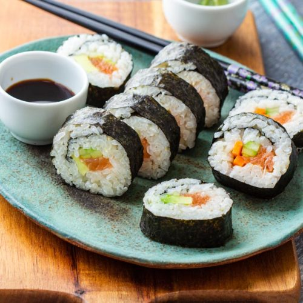

Sushi Recipe
Home
Braised Beef Recipe
Shrimp Rice Bowl Recipe

Description
This is a very simpel sushi recipe, it has been passed down from generations.
Ingredientes
- 2 cups sushi rice
- 2 ½ cups water
- ¼ cup rice vinegar
- 2 tbsp sugar
- 1 tsp salt
- 4 sheets nori (seaweed)
- 1 small cucumber (cut into thin strips)
- 1 avocado (sliced)
- 1 small carrot (optional, julienned)
- 4 oz salmon, crab, or your choice of protein
- Soy sauce (for dipping)
- Bamboo sushi mat (optional but helps roll neatly)
Steps
1. Cook the rice
- Rinse the sushi rice until the water runs clear.
- Cook with water (2:2.5 ratio) in a rice cooker or pot.
- Let it cool slightly.
2. Season the rice
- Mix rice vinegar, sugar, and salt in a small pan — heat until dissolved.
- Stir into warm rice. Let it cool to room temperature.
3. Prepare fillings
- Slice cucumber, avocado, and other fillings into thin strips.
- Have your fish or protein ready.
4. Assemble the roll
- Place a nori sheet shiny side down on your bamboo mat.
- Spread a thin layer of rice over the nori, leaving 1 inch uncovered at the top.
- Arrange fillings (fish, cucumber, avocado) horizontally across the center.
5. Roll the sushi
- Lift the edge of the mat closest to you and roll it forward, pressing gently to shape it into a log.
- Use a bit of water on the top edge to seal the roll.
6. Cut and serve
- Slice the roll into 6-8 pieces using a sharp, wet knife.
- Serve with soy sauce, wasabi, and pickled ginger.